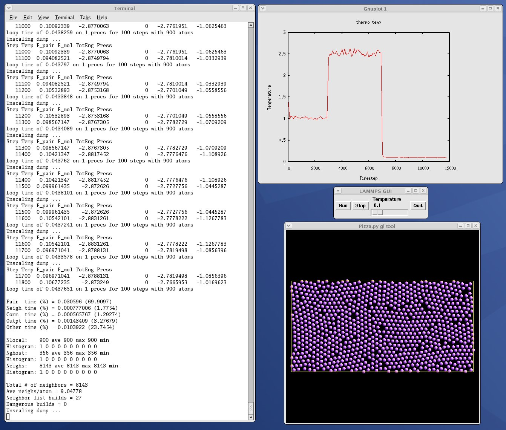
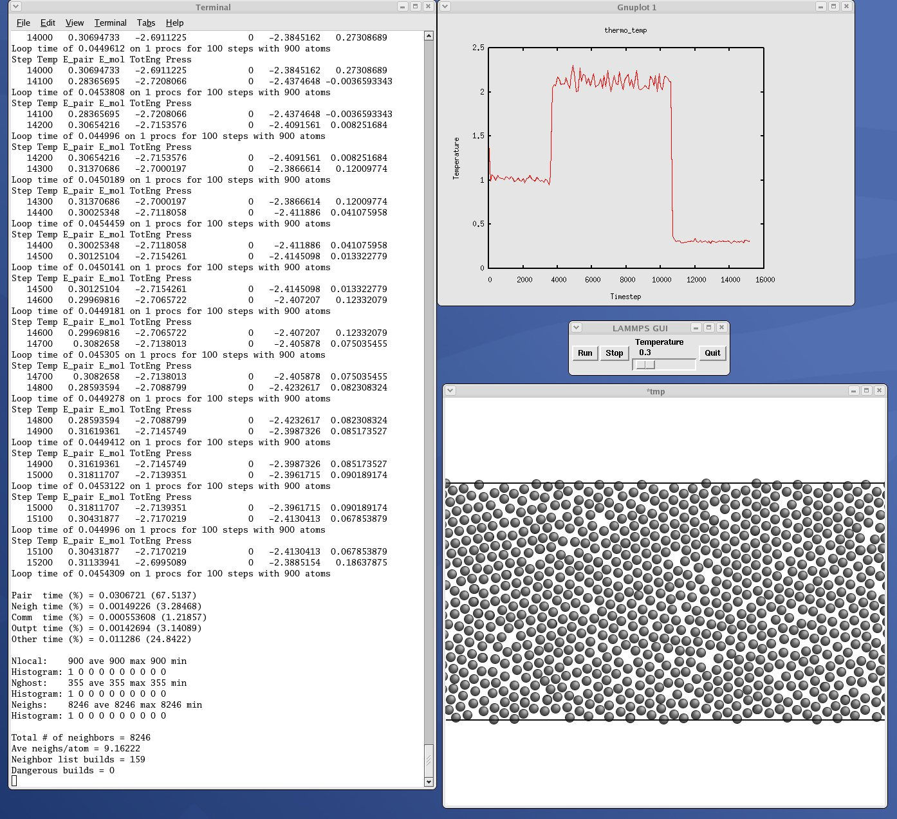
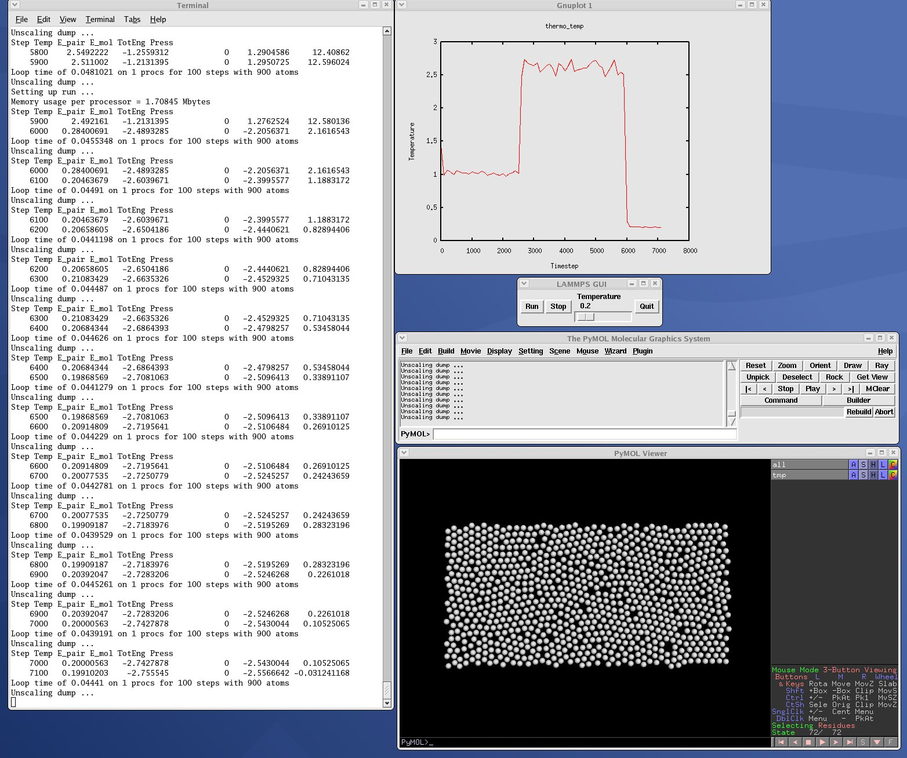
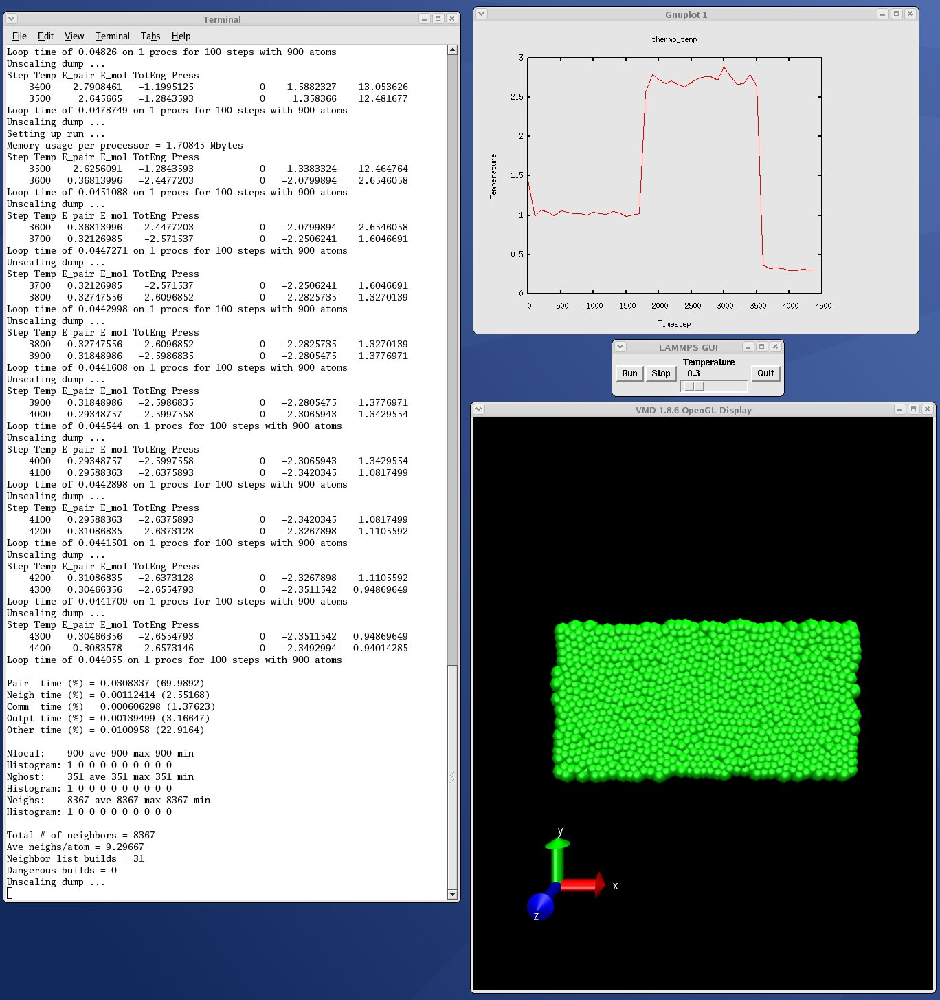

13. Python interface to LAMMPS¶
This section describes how to build and use LAMMPS via a Python interface.
The LAMMPS distribution includes the file python/lammps.py which wraps the library interface to LAMMPS. This file makes it is possible to run LAMMPS, invoke LAMMPS commands or give it an input script, extract LAMMPS results, an modify internal LAMMPS variables, either from a Python script or interactively from a Python prompt. You can do the former in serial or parallel. Running Python interactively in parallel does not generally work, unless you have a package installed that extends your Python to enable multiple instances of Python to read what you type.
Python is a powerful scripting and programming language which can be used to wrap software like LAMMPS and other packages. It can be used to glue multiple pieces of software together, e.g. to run a coupled or multiscale model. See Section section of the manual and the couple directory of the distribution for more ideas about coupling LAMMPS to other codes. See Section_start 4 about how to build LAMMPS as a library, and Section_howto 19 for a description of the library interface provided in src/library.cpp and src/library.h and how to extend it for your needs. As described below, that interface is what is exposed to Python. It is designed to be easy to add functions to. This can easily extend the Python interface as well. See details below.
By using the Python interface, LAMMPS can also be coupled with a GUI or other visualization tools that display graphs or animations in real time as LAMMPS runs. Examples of such scripts are included in the python directory.
Two advantages of using Python are how concise the language is, and that it can be run interactively, enabling rapid development and debugging of programs. If you use it to mostly invoke costly operations within LAMMPS, such as running a simulation for a reasonable number of timesteps, then the overhead cost of invoking LAMMPS through Python will be negligible.
Before using LAMMPS from a Python script, you need to do two things. You need to build LAMMPS as a dynamic shared library, so it can be loaded by Python. And you need to tell Python how to find the library and the Python wrapper file python/lammps.py. Both these steps are discussed below. If you wish to run LAMMPS in parallel from Python, you also need to extend your Python with MPI. This is also discussed below.
The Python wrapper for LAMMPS uses the amazing and magical (to me) “ctypes” package in Python, which auto-generates the interface code needed between Python and a set of C interface routines for a library. Ctypes is part of standard Python for versions 2.5 and later. You can check which version of Python you have installed, by simply typing “python” at a shell prompt.
13.2. Installing the Python wrapper into Python¶
For Python to invoke LAMMPS, there are 2 files it needs to know about:
python/lammps.py
src/liblammps.so
Lammps.py is the Python wrapper on the LAMMPS library interface. Liblammps.so is the shared LAMMPS library that Python loads, as described above.
You can insure Python can find these files in one of two ways:
set two environment variables
run the python/install.py script
If you set the paths to these files as environment variables, you only have to do it once. For the csh or tcsh shells, add something like this to your ~/.cshrc file, one line for each of the two files:
setenv PYTHONPATH $PYTHONPATH:/home/sjplimp/lammps/python setenv LD_LIBRARY_PATH $*LD_LIBRARY_PATH*:/home/sjplimp/lammps/src
If you use the python/install.py script, you need to invoke it every time you rebuild LAMMPS (as a shared library) or make changes to the python/lammps.py file.
You can invoke install.py from the python directory as
% python install.py [libdir] [pydir]
The optional libdir is where to copy the LAMMPS shared library to; the default is /usr/local/lib. The optional pydir is where to copy the lammps.py file to; the default is the site-packages directory of the version of Python that is running the install script.
Note that libdir must be a location that is in your default LD_LIBRARY_PATH, like /usr/local/lib or /usr/lib. And pydir must be a location that Python looks in by default for imported modules, like its site-packages dir. If you want to copy these files to non-standard locations, such as within your own user space, you will need to set your PYTHONPATH and LD_LIBRARY_PATH environment variables accordingly, as above.
If the install.py script does not allow you to copy files into system directories, prefix the python command with “sudo”. If you do this, make sure that the Python that root runs is the same as the Python you run. E.g. you may need to do something like
% sudo /usr/local/bin/python install.py [libdir] [pydir]
You can also invoke install.py from the make command in the src directory as
% make install-python
In this mode you cannot append optional arguments. Again, you may need to prefix this with “sudo”. In this mode you cannot control which Python is invoked by root.
Note that if you want Python to be able to load different versions of the LAMMPS shared library (see this section below), you will need to manually copy files like liblammps_g++.so into the appropriate system directory. This is not needed if you set the LD_LIBRARY_PATH environment variable as described above.
13.3. Extending Python with MPI to run in parallel¶
If you wish to run LAMMPS in parallel from Python, you need to extend your Python with an interface to MPI. This also allows you to make MPI calls directly from Python in your script, if you desire.
There are several Python packages available that purport to wrap MPI as a library and allow MPI functions to be called from Python.
These include
All of these except pyMPI work by wrapping the MPI library and exposing (some portion of) its interface to your Python script. This means Python cannot be used interactively in parallel, since they do not address the issue of interactive input to multiple instances of Python running on different processors. The one exception is pyMPI, which alters the Python interpreter to address this issue, and (I believe) creates a new alternate executable (in place of “python” itself) as a result.
In principle any of these Python/MPI packages should work to invoke LAMMPS in parallel and MPI calls themselves from a Python script which is itself running in parallel. However, when I downloaded and looked at a few of them, their documentation was incomplete and I had trouble with their installation. It’s not clear if some of the packages are still being actively developed and supported.
The one I recommend, since I have successfully used it with LAMMPS, is PyPar. PyPar requires the ubiquitous Numpy package be installed in your Python. After launching python, type
import numpy
to see if it is installed. If not, here is how to install it (version 1.3.0b1 as of April 2009). Unpack the numpy tarball and from its top-level directory, type
python setup.py build
sudo python setup.py install
The “sudo” is only needed if required to copy Numpy files into your Python distribution’s site-packages directory.
To install PyPar (version pypar-2.1.4_94 as of Aug 2012), unpack it and from its “source” directory, type
python setup.py build
sudo python setup.py install
Again, the “sudo” is only needed if required to copy PyPar files into your Python distribution’s site-packages directory.
If you have successfully installed PyPar, you should be able to run Python and type
import pypar
without error. You should also be able to run python in parallel on a simple test script
% mpirun -np 4 python test.py
where test.py contains the lines
import pypar
print "Proc %d out of %d procs" % (pypar.rank(),pypar.size())
and see one line of output for each processor you run on.
Note
To use PyPar and LAMMPS in parallel from Python, you must insure both are using the same version of MPI. If you only have one MPI installed on your system, this is not an issue, but it can be if you have multiple MPIs. Your LAMMPS build is explicit about which MPI it is using, since you specify the details in your lo-level src/MAKE/Makefile.foo file. PyPar uses the “mpicc” command to find information about the MPI it uses to build against. And it tries to load “libmpi.so” from the LD_LIBRARY_PATH. This may or may not find the MPI library that LAMMPS is using. If you have problems running both PyPar and LAMMPS together, this is an issue you may need to address, e.g. by moving other MPI installations so that PyPar finds the right one.
13.4. Testing the Python-LAMMPS interface¶
To test if LAMMPS is callable from Python, launch Python interactively and type:
>>> from lammps import lammps
>>> lmp = lammps()
If you get no errors, you’re ready to use LAMMPS from Python. If the 2nd command fails, the most common error to see is
OSError: Could not load LAMMPS dynamic library
which means Python was unable to load the LAMMPS shared library. This typically occurs if the system can’t find the LAMMPS shared library or one of the auxiliary shared libraries it depends on, or if something about the library is incompatible with your Python. The error message should give you an indication of what went wrong.
You can also test the load directly in Python as follows, without first importing from the lammps.py file:
>>> from ctypes import CDLL
>>> CDLL("liblammps.so")
If an error occurs, carefully go through the steps in Section_start 5 and above about building a shared library and about insuring Python can find the necessary two files it needs.
13.4.1. Test LAMMPS and Python in serial:¶
To run a LAMMPS test in serial, type these lines into Python interactively from the bench directory:
>>> from lammps import lammps
>>> lmp = lammps()
>>> lmp.file("in.lj")
Or put the same lines in the file test.py and run it as
% python test.py
Either way, you should see the results of running the in.lj benchmark on a single processor appear on the screen, the same as if you had typed something like:
lmp_g++ -in in.lj
13.4.2. Test LAMMPS and Python in parallel:¶
To run LAMMPS in parallel, assuming you have installed the PyPar package as discussed above, create a test.py file containing these lines:
import pypar
from lammps import lammps
lmp = lammps()
lmp.file("in.lj")
print "Proc %d out of %d procs has" % (pypar.rank(),pypar.size()),lmp
pypar.finalize()
You can then run it in parallel as:
% mpirun -np 4 python test.py
and you should see the same output as if you had typed
% mpirun -np 4 lmp_g++ -in in.lj
Note that if you leave out the 3 lines from test.py that specify PyPar commands you will instantiate and run LAMMPS independently on each of the P processors specified in the mpirun command. In this case you should get 4 sets of output, each showing that a LAMMPS run was made on a single processor, instead of one set of output showing that LAMMPS ran on 4 processors. If the 1-processor outputs occur, it means that PyPar is not working correctly.
Also note that once you import the PyPar module, PyPar initializes MPI for you, and you can use MPI calls directly in your Python script, as described in the PyPar documentation. The last line of your Python script should be pypar.finalize(), to insure MPI is shut down correctly.
13.4.3. Running Python scripts:¶
Note that any Python script (not just for LAMMPS) can be invoked in one of several ways:
% python foo.script
% python -i foo.script
% foo.script
The last command requires that the first line of the script be something like this:
#!/usr/local/bin/python
#!/usr/local/bin/python -i
where the path points to where you have Python installed, and that you have made the script file executable:
% chmod +x foo.script
Without the “-i” flag, Python will exit when the script finishes. With the “-i” flag, you will be left in the Python interpreter when the script finishes, so you can type subsequent commands. As mentioned above, you can only run Python interactively when running Python on a single processor, not in parallel.
13.5. Using LAMMPS from Python¶
The Python interface to LAMMPS consists of a Python “lammps” module, the source code for which is in python/lammps.py, which creates a “lammps” object, with a set of methods that can be invoked on that object. The sample Python code below assumes you have first imported the “lammps” module in your Python script, as follows:
from lammps import lammps
These are the methods defined by the lammps module. If you look at the file src/library.cpp you will see that they correspond one-to-one with calls you can make to the LAMMPS library from a C++ or C or Fortran program.
lmp = lammps() # create a LAMMPS object using the default liblammps.so library
lmp = lammps("g++") # create a LAMMPS object using the liblammps_g++.so library
lmp = lammps("",list) # ditto, with command-line args, e.g. list = ["-echo","screen"]
lmp = lammps("g++",list)
lmp.close() # destroy a LAMMPS object
lmp.file(file) # run an entire input script, file = "in.lj"
lmp.command(cmd) # invoke a single LAMMPS command, cmd = "run 100"
xlo = lmp.extract_global(name,type) # extract a global quantity
# name = "boxxlo", "nlocal", etc
# type = 0 = int
# 1 = double
coords = lmp.extract_atom(name,type) # extract a per-atom quantity
# name = "x", "type", etc
# type = 0 = vector of ints
# 1 = array of ints
# 2 = vector of doubles
# 3 = array of doubles
eng = lmp.extract_compute(id,style,type) # extract value(s) from a compute
v3 = lmp.extract_fix(id,style,type,i,j) # extract value(s) from a fix
# id = ID of compute or fix
# style = 0 = global data
# 1 = per-atom data
# 2 = local data
# type = 0 = scalar
# 1 = vector
# 2 = array
# i,j = indices of value in global vector or array
var = lmp.extract_variable(name,group,flag) # extract value(s) from a variable
# name = name of variable
# group = group ID (ignored for equal-style variables)
# flag = 0 = equal-style variable
# 1 = atom-style variable
natoms = lmp.get_natoms() # total # of atoms as int
data = lmp.gather_atoms(name,type,count) # return atom attribute of all atoms gathered into data, ordered by atom ID
# name = "x", "charge", "type", etc
# count = # of per-atom values, 1 or 3, etc
lmp.scatter_atoms(name,type,count,data) # scatter atom attribute of all atoms from data, ordered by atom ID
# name = "x", "charge", "type", etc
# count = # of per-atom values, 1 or 3, etc
Warning
Currently, the creation of a LAMMPS object from within lammps.py does not take an MPI communicator as an argument. There should be a way to do this, so that the LAMMPS instance runs on a subset of processors if desired, but I don’t know how to do it from PyPar. So for now, it runs with MPI_COMM_WORLD, which is all the processors. If someone figures out how to do this with one or more of the Python wrappers for MPI, like PyPar, please let us know and we will amend these doc pages.
Note that you can create multiple LAMMPS objects in your Python script, and coordinate and run multiple simulations, e.g.
from lammps import lammps
lmp1 = lammps()
lmp2 = lammps()
lmp1.file("in.file1")
lmp2.file("in.file2")
The file() and command() methods allow an input script or single commands to be invoked.
The extract_global(), extract_atom(), extract_compute(), extract_fix(), and extract_variable() methods return values or pointers to data structures internal to LAMMPS.
For extract_global() see the src/library.cpp file for the list of valid names. New names could easily be added. A double or integer is returned. You need to specify the appropriate data type via the type argument.
For extract_atom(), a pointer to internal LAMMPS atom-based data is returned, which you can use via normal Python subscripting. See the extract() method in the src/atom.cpp file for a list of valid names. Again, new names could easily be added. A pointer to a vector of doubles or integers, or a pointer to an array of doubles (double **) or integers (int **) is returned. You need to specify the appropriate data type via the type argument.
For extract_compute() and extract_fix(), the global, per-atom, or local data calculated by the compute or fix can be accessed. What is returned depends on whether the compute or fix calculates a scalar or vector or array. For a scalar, a single double value is returned. If the compute or fix calculates a vector or array, a pointer to the internal LAMMPS data is returned, which you can use via normal Python subscripting. The one exception is that for a fix that calculates a global vector or array, a single double value from the vector or array is returned, indexed by I (vector) or I and J (array). I,J are zero-based indices. The I,J arguments can be left out if not needed. See Section_howto 15 of the manual for a discussion of global, per-atom, and local data, and of scalar, vector, and array data types. See the doc pages for individual computes and fixes for a description of what they calculate and store.
For extract_variable(), an equal-style or atom-style variable is evaluated and its result returned.
For equal-style variables a single double value is returned and the group argument is ignored. For atom-style variables, a vector of doubles is returned, one value per atom, which you can use via normal Python subscripting. The values will be zero for atoms not in the specified group.
The get_natoms() method returns the total number of atoms in the simulation, as an int.
The gather_atoms() method returns a ctypes vector of ints or doubles as specified by type, of length count*natoms, for the property of all the atoms in the simulation specified by name, ordered by count and then by atom ID. The vector can be used via normal Python subscripting. If atom IDs are not consecutively ordered within LAMMPS, a None is returned as indication of an error.
Note that the data structure gather_atoms(“x”) returns is different from the data structure returned by extract_atom(“x”) in four ways. (1) Gather_atoms() returns a vector which you index as x[i]; extract_atom() returns an array which you index as x[i][j]. (2) Gather_atoms() orders the atoms by atom ID while extract_atom() does not. (3) Gathert_atoms() returns a list of all atoms in the simulation; extract_atoms() returns just the atoms local to each processor. (4) Finally, the gather_atoms() data structure is a copy of the atom coords stored internally in LAMMPS, whereas extract_atom() returns an array that effectively points directly to the internal data. This means you can change values inside LAMMPS from Python by assigning a new values to the extract_atom() array. To do this with the gather_atoms() vector, you need to change values in the vector, then invoke the scatter_atoms() method.
The scatter_atoms() method takes a vector of ints or doubles as specified by type, of length count*natoms, for the property of all the atoms in the simulation specified by name, ordered by bount and then by atom ID. It uses the vector of data to overwrite the corresponding properties for each atom inside LAMMPS. This requires LAMMPS to have its “map” option enabled; see the atom_modify command for details. If it is not, or if atom IDs are not consecutively ordered, no coordinates are reset.
The array of coordinates passed to scatter_atoms() must be a ctypes vector of ints or doubles, allocated and initialized something like this:
from ctypes import *
natoms = lmp.get_natoms()
n3 = 3*natoms
x = (n3*c_double)()
x[0] = x coord of atom with ID 1
x[1] = y coord of atom with ID 1
x[2] = z coord of atom with ID 1
x[3] = x coord of atom with ID 2
...
x[n3-1] = z coord of atom with ID natoms
lmp.scatter_coords("x",1,3,x)
Alternatively, you can just change values in the vector returned by gather_atoms(“x”,1,3), since it is a ctypes vector of doubles.
As noted above, these Python class methods correspond one-to-one with the functions in the LAMMPS library interface in src/library.cpp and library.h. This means you can extend the Python wrapper via the following steps:
Add a new interface function to src/library.cpp and src/library.h.
Rebuild LAMMPS as a shared library.
Add a wrapper method to python/lammps.py for this interface function.
You should now be able to invoke the new interface function from a Python script. Isn’t ctypes amazing?
13.6. Example Python scripts that use LAMMPS¶
These are the Python scripts included as demos in the python/examples directory of the LAMMPS distribution, to illustrate the kinds of things that are possible when Python wraps LAMMPS. If you create your own scripts, send them to us and we can include them in the LAMMPS distribution.
trivial.py |
read/run a LAMMPS input script through Python |
demo.py |
invoke various LAMMPS library interface routines |
simple.py |
mimic operation of couple/simple/simple.cpp in Python |
gui.py |
GUI go/stop/temperature-slider to control LAMMPS |
plot.py |
real-time temperature plot with GnuPlot via Pizza.py |
viz_tool.py |
real-time viz via some viz package |
vizplotgui_tool.py |
combination of viz_tool.py and plot.py and gui.py |
For the viz_tool.py and vizplotgui_tool.py commands, replace “tool” with “gl” or “atomeye” or “pymol” or “vmd”, depending on what visualization package you have installed.
Note that for GL, you need to be able to run the Pizza.py GL tool, which is included in the pizza sub-directory. See the Pizza.py doc pages for more info:
Note that for AtomEye, you need version 3, and there is a line in the scripts that specifies the path and name of the executable. See the AtomEye WWW pages here or here for more details:
http://mt.seas.upenn.edu/Archive/Graphics/A
http://mt.seas.upenn.edu/Archive/Graphics/A3/A3.html
The latter link is to AtomEye 3 which has the scriping capability needed by these Python scripts.
Note that for PyMol, you need to have built and installed the open-source version of PyMol in your Python, so that you can import it from a Python script. See the PyMol WWW pages here or here for more details:
http://www.pymol.org
http://sourceforge.net/scm/?type=svn&group_id=4546
The latter link is to the open-source version.
Note that for VMD, you need a fairly current version (1.8.7 works for me) and there are some lines in the pizza/vmd.py script for 4 PIZZA variables that have to match the VMD installation on your system.
See the python/README file for instructions on how to run them and the source code for individual scripts for comments about what they do.
Here are screenshots of the vizplotgui_tool.py script in action for different visualization package options. Click to see larger images:
   {kind=link}
{kind=link}
{kind=link}
{kind=link}